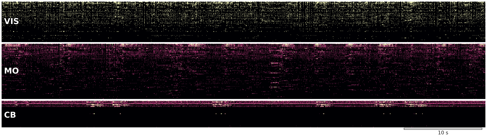
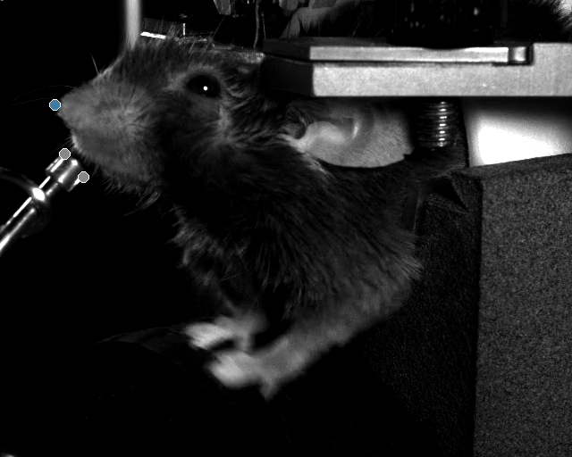
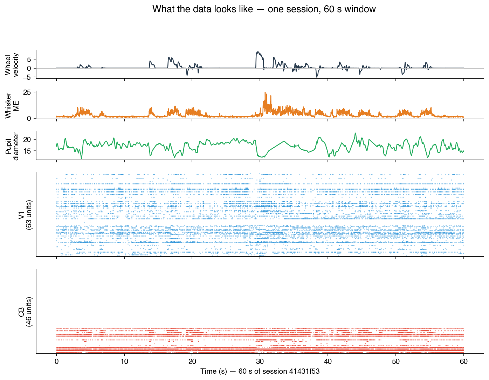
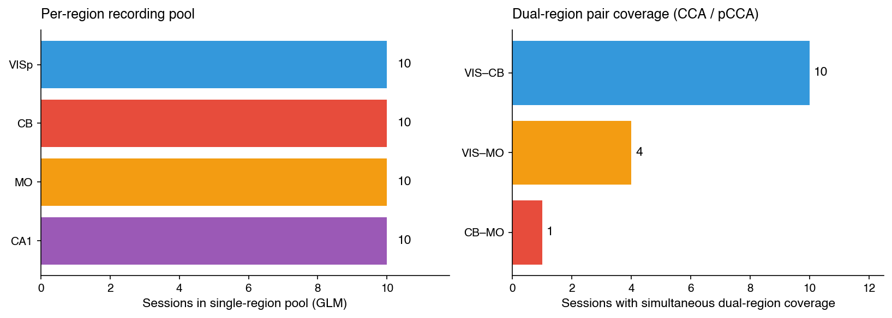
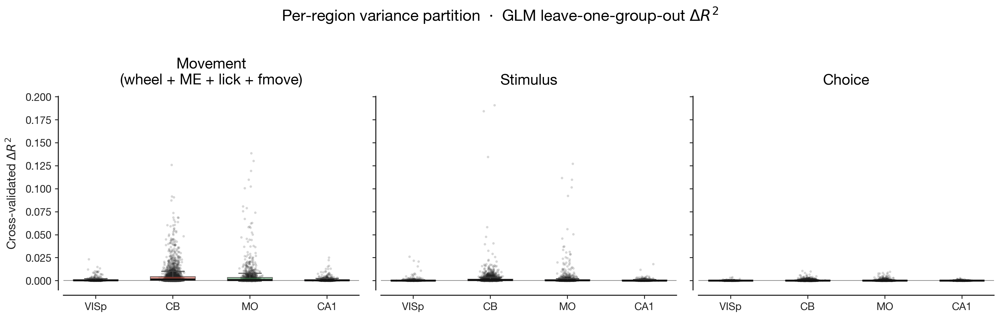
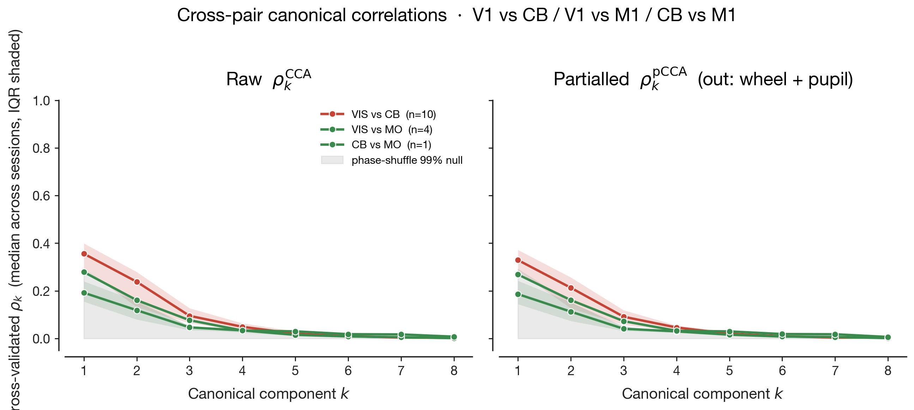
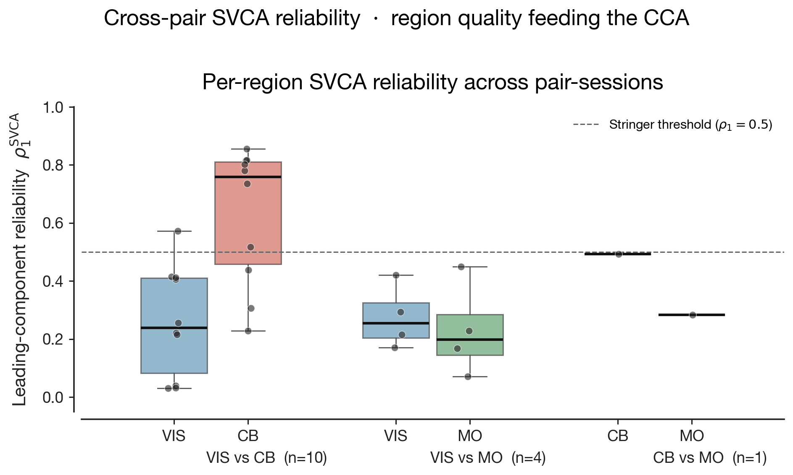
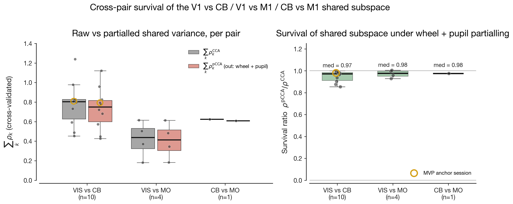
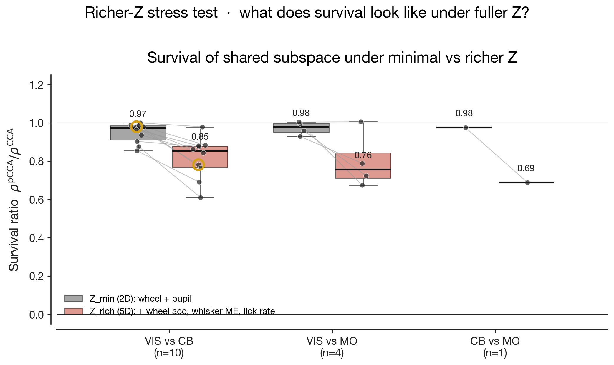
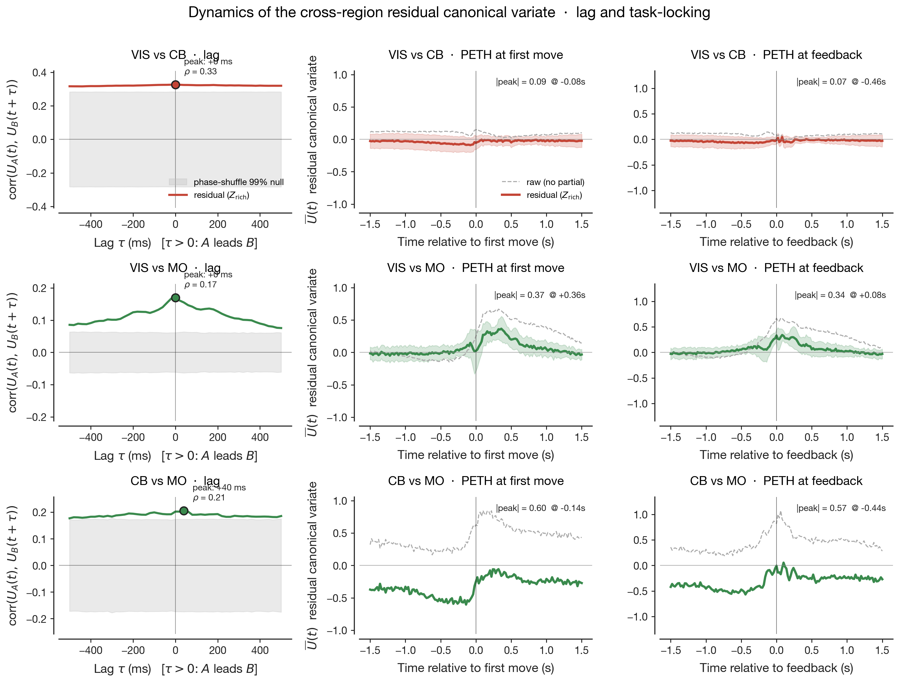

1Halıcıoğlu Data Science Institute, University of California, San Diego
2Department of Cognitive Science, University of California, San Diego
3Computational Neurobiology Laboratory, Salk Institute for Biological Studies
Abstract
When the same behavioural information appears in many brain regions at once, the natural question is whether those regions share the same neural geometry — the same low-dimensional population state, expressed along the same axes — or whether each region independently arrives at a different code that just happens to decode to the same scalar. Decoding accuracy cannot tell these apart; only the shape of the population state space can. Across fifteen simultaneous dual-region recordings from the IBL Brain-Wide Map spanning mouse visual cortex (V1), motor cortex (M1), and cerebellum (CB), we measure the geometry shared between regional subspaces with canonical correlation analysis, then strip away every direction explainable by measured behaviour — wheel velocity, pupil, whisker and body motion energy, lick rate — and ask what geometry remains. It does not collapse. Across all three pairs, 0.69–0.85 of the pair-summed shared geometry survives even the richest behavioural partial. But what survives is doing three different things in the three pairs. V1↔CB traces a slow, task-flat, zero-lag shared mode — geometry consistent with a global state we still do not measure. V1↔M1 traces a zero-lag mode with large peri-movement and peri-feedback excursions — geometry consistent with a shared cognitive variable both regions reflect simultaneously. CB↔M1 traces a directed mode with cerebellum leading motor cortex by ~40 ms — geometry consistent with real cerebellothalamocortical transmission. One scalar survival ratio, three different representational geometries.
The question
A population of neurons does not encode the world one cell at a time. It encodes it geometrically — as a low-dimensional state that moves along a few preferred axes inside a much higher-dimensional firing-rate space, with the rest of the directions doing little of behavioural relevance. Two regions can land at the same decoding accuracy through completely different geometries: one might place running speed along a single arousal-driven gain axis while the other carries it as a high-dimensional pattern that a linear classifier happens to read just as well. Same information, different geometry. The shared-subspace methods used below separate these two pictures; a decoder cannot.
Stringer et al. (2019) and the IBL Brain-Wide Map (2025) both report that locomotion and orofacial movement variables are decodable from essentially every mouse brain region they record. The unresolved question is whether that ubiquity reflects one geometry — one low-dimensional global state, inherited along the same axes everywhere — or many region-specific geometries whose only commonality is that the same scalar can be read from each. Three pairs in the IBL Brain-Wide Map 2023_12 release let us probe this: V1↔CB (the canonical "is V1 just inheriting cerebellar arousal geometry?" question), V1↔M1 (cortical neighbours plausibly sharing task-state axes), and CB↔M1 (the most direct anatomical pathway, via the cerebellothalamocortical loop, where shared geometry would mean shared transmission). On fifteen dual-region recordings, we partial out movement covariates at two granularities — minimal (wheel + pupil) and rich (+ wheel acceleration, whisker and body motion energy, lick rate) — and probe the shape, flow, and task-locking of whatever geometry survives.
The dataset
We use the public IBL Brain-Wide Map
2023_12 freeze — 459 sessions, 1+ Neuropixels probe each, mice performing
the IBL contrast-discrimination task. Every session ships: spike-sorted units with
Beryl-atlas annotations, the wheel encoder at 1 kHz, three head-fixed cameras with
DLC pose markers + whisker-pad motion energy + derived pupil diameter, and the
trial table. Public ONE auth, no Alyx account needed.
The Beryl atlas is IBL's standard 308-region coarsening of the
Allen Mouse Brain Common Coordinate Framework v3
(CCFv3, ~1300 leaf regions). Beryl rolls leaf labels up to a uniform mid-level
hierarchy — primary visual cortex stays VISp; CCFv3's many cerebellar
lobule sub-labels collapse into ~17 Beryl labels (cortex lobules LING,
CENT, CUL, DEC, FOTU,
PYR, UVU, NOD, SIM,
AN, PRM, COPY, PFL,
FL, plus nuclei FN, IP, DN).
Each spike-sorted cluster carries a Beryl acronym after probe-to-CCF histology
alignment — that's what we filter on to build per-region populations. The cerebellum
ROI in this analysis is therefore the union of all 17 Beryl cerebellar labels,
not a single acronym; visual cortex is the union of 10 dorsal-VIS Beryl labels.

What the mouse is doing. 3-second clip from the leftCamera of the focal V1+CB session, with DeepLabCut pose markers overlaid (pupil corners, whisker pad, paw, tongue, nose). The mouse is in a head-fixed running bout. The behavioural covariates the GLM and pCCA Z-matrix consume — wheel velocity, whisker motion energy, pupil diameter, lick rate — are all derived from this stream + the wheel encoder.

What one session looks like. 60 seconds of session
41431f53 (subject CSH_ZAD_022, ~88 min total).
Top three rows: behavioural covariates on a 20-ms grid (wheel velocity,
whisker motion energy, pupil diameter). Bottom two rows: spike rasters
from the two simultaneously recorded probes — 63 V1 units (blue) and 46
cerebellar units (red). Wheel velocity and motion energy track each other
tightly during running bouts; pupil dilates slowly across the window.
A single session at 20 ms binning has T ≈ 263 000 time bins, ~50–100 sorted units per region, ~22 M spike events total. Time is plentiful; what's scarce is simultaneous dual-region coverage — the IBL probe-placement protocol is independent across sessions, so the number of sessions containing both regions of any given pair is small and outside our control.

Recording funnel. Left: per-region single-region pools used for the per-neuron GLM (10 best sessions per region, 4 886 neurons total). Right: per-pair simultaneous-recording counts at minimum 5 units per region. VIS↔CB is the largest pair (n = 10), VIS↔MO is intermediate (n = 4), CB↔MO is a single session (n = 1). Zero sessions in BWM 2023_12 contain simultaneous V1+CB+M1 coverage.
The method
The pipeline moves down a ladder of geometric resolution. The GLM gives a per-neuron scalar — how much spike-count variance lives along the movement regressors — to verify the dataset behaves the way the literature predicts. SVCA then drops the single-neuron view and asks: what is each region's reliable subspace — the axes inside its firing-rate space along which population activity moves reproducibly rather than just floats on noise? CCA asks the cross-region geometric question: which axes inside region A's subspace co-rotate with which axes inside region B's, and how strongly? Partial CCA strips out the axes linearly explainable by behaviour and re-asks the same question on the residual geometry. Dynamics asks what the surviving axes are doing in time — whether the shared mode flows from one region to the other and whether it locks to task events. The prose below sketches each step in turn; the full math, with equations and "what we need it for" notes per stage, lives in the Appendix, which the reader new to these methods may want to skim first.
Per-neuron GLM. Before any cross-region method runs, we need to know what fraction of each neuron's spike-count variance is uniquely explained by movement, after stimulus, choice, feedback, prior, wheel, motion-energy, and pupil regressors have all competed for the same variance. No simpler estimator gives that decomposition. We fit Ridge regression on 20-ms-binned spike counts with a raised-cosine basis expansion of the eight regressor groups (~60 design columns), compute leave-one-group-out cross-validated ΔR² as the per-group unique contribution, and average over 5 KFold splits. This mirrors paper-brain-wide-map/encoding almost verbatim.
Within-region SVCA. The cross-region CCA stage needs two trustworthy low-dimensional summaries — one per region. Naive PCA returns impressive-looking leading components on any matrix, including pure noise, when the population is small and the time axis is long. To avoid feeding CCA dimensions that wouldn't survive a re-sample, we use Stringer et al.'s split-half-cells × split-half-time procedure: components are fit on one cell-half over training time, then both halves are projected into the held-out time block and the cross-half product is divided by total energy. The resulting reliability ρ approaches 1 for reproducible population modes and 0 for noise.
Partial CCA via Frisch–Waugh–Lovell. Two regions bathed in the same global locomotion + arousal drive will share geometry for trivial reasons — both will carry a behavioural axis, both will look aligned along it. The actual question is whether the two subspaces share any direction that cannot be expressed as a linear function of wheel velocity and pupil diameter. To answer it, we regress each region's SVCA scores on Z, take the residuals — the components of each region's state orthogonal to the behavioural axes — and fit CCA on those residuals. Both the regression and the CCA fits are estimated on training folds only and applied to held-out folds — strict no-leakage cross-validation.
Phase-shuffle null. At T ≈ 263 000 bins with slow neural drift, two completely unrelated regions still produce non-trivial canonical correlations from autocorrelated noise alone. We need a noise floor that preserves each region's autocorrelation while breaking the cross-region temporal alignment, and phase-randomising the Fourier coefficients of each channel does exactly that. We generate 200 such surrogates per pair, take the 99% bound, and use it as the band against which raw and partialled canonical correlations are compared.
Result 1
We refit the per-neuron Ridge generalised linear model (raised-cosine task and movement kernels, leave-one-group-out cross-validated ΔR²) used by the IBL collaboration (2025) and Wang & Druckmann (2026), on the expanded 4,886-neuron sample.

Figure 1. Per-region GLM ΔR² for the movement, stimulus, and choice kernel groups (n = 4,886 neurons across 51 sessions).
Cross-validated ΔR² for the movement kernel group ranks largest in motor cortex and cerebellum, smaller in visual cortex, and near zero in CA1 — the canonical MO ≳ CB > VIS ≳ CA1 ordering reported in the literature. The stimulus and choice variances follow the published per-region pattern. The expanded sample preserves the ranking, so the cross-region inference below inherits trust from a passing reproduction at the new scale.
Result 2
Per session, we compute cross-validated canonical correlations between the leading K = 8 SVCA-projected score time series of the two regions, with phase-shuffle surrogates as the noise floor, and repeat with both sides residualised against Z = (wheel velocity, pupil diameter).

Figure 2. Cross-pair canonical correlations across sessions. Left panel: raw cross-validated $\rho_k$ vs. component $k$. Right panel: the same under wheel + pupil partial. Phase-shuffle 99% null bands are shaded.
The three pairs differ by nearly a factor of two in raw shared variance (Fig. 2 left). V1↔CB carries the largest leading canonical correlation (median $\rho_1 \approx 0.36$ across sessions, with components above the null through $k = 4$), CB↔M1 sits in the middle ($\rho_1 \approx 0.30$), and V1↔M1 is the smallest ($\rho_1 \approx 0.22$, with $k \geq 3$ already inside the surrogate band). The pair with the strongest coupling is therefore not the pair with the most direct anatomical pathway — V1 reaches cerebellum only through pontine and brainstem relays, while CB and M1 connect directly through the cerebellothalamocortical loop. We return to this asymmetry in §3.
Partialling wheel velocity and pupil diameter shifts each curve down only slightly (Fig. 2 right): V1↔CB peak from 0.36 to 0.32, V1↔M1 from 0.22 to 0.20, CB↔M1 from 0.30 to 0.28. Under the null hypothesis that the three pairs share movement structure exclusively through a globally coupled wheel + pupil drive, the right panel would lie inside the surrogate band. It does not. The shared subspaces extracted by canonical correlation analysis are not, predominantly, the wheel- or pupil-driven projection of each region's activity.
Result 3
Two further observations bear on how Fig. 2 should be read. First, SVCA reliability — the cross-validated reproducibility of each population component — is highly asymmetric across pairs.

Figure 3. SVCA reliability per region across pair-sessions, with Stringer et al.'s $\rho_1 = 0.5$ threshold marked.
Cerebellum on the V1+CB pair sessions is uniquely well-resolved (median $\rho_1^{\text{SVCA}} \approx 0.76$, with several sessions clearing Stringer et al.'s 2019 $\rho_1 = 0.5$ threshold on multiple components). Visual cortex and motor cortex on every other pair-session sit at $\rho_1 \approx 0.20$–$0.25$; the V1↔M1 pair has uniformly poor reliability on both sides. The CCA on V1↔CB is therefore being computed between a noisy V1 score and a relatively clean CB score, with the cerebellar side carrying the recoverable structure.

Figure 4. Survival ratio $\sum_k \rho_k^{\text{pCCA}} / \sum_k \rho_k^{\text{CCA}}$ under wheel + pupil partialling, per pair-session.
Second, the pair-summed canonical correlations converge to nearly identical ratios across pairs — median $\sum_k \rho_k^{\text{pCCA}} / \sum_k \rho_k^{\text{CCA}} = 0.97, 0.98, 0.98$ for V1↔CB, V1↔M1, CB↔M1 — despite the underlying signal magnitudes ($\sum_k \rho_k^{\text{CCA}} \approx 0.80, 0.44, 0.62$) differing by nearly a factor of two. The convergence is a proportional statement about preserved-versus-discarded variance, not a magnitude statement about the size of the shared subspace itself. If wheel and pupil were exhaustive measures of global movement state, each region's projection of that state would be the dominant axis of cross-region coupling, partialling would cancel the leading canonical correlations, and the survival ratio would tend to zero. The fact that it tends to one for every pair is the headline of the partialling analysis under wheel + pupil — but the headline is only as strong as the assumption that wheel + pupil exhausts the relevant global state.
Result 4
To test the assumption that wheel + pupil exhaust the relevant global state, we extend Z to wheel acceleration, whisker motion energy, body motion energy (where the body camera is available), and lick rate — the IBL-shipped uninstructed-movement scalars, 5–6 dimensions versus the original 2 — and re-fit the partial CCA on the same SVCA scores.

Figure 5. Per-pair survival ratio under minimal Z (wheel + pupil) vs. richer Z (+ wheel acceleration, whisker ME, body ME, lick rate).
Median survival drops in every pair: V1↔CB to 0.85 (Δ = 0.11), V1↔M1 to 0.76 (Δ = 0.19), CB↔M1 to 0.69 (Δ = 0.29). The earlier 0.97 was therefore over-stated as a measure of behavioural orthogonality. About a tenth to a third of what looked like non-behavioural cross-region coupling under the narrower probe was uninstructed-movement variance that wheel and pupil simply did not record.
The shared subspace nevertheless does not collapse: 0.69–0.85 of pair-summed shared variance per pair survives even the richer probe. Within V1↔CB, the per-session magnitude of the drop is loosely anti-correlated with raw signal magnitude (Spearman r ≈ −0.5, n = 10): the two sessions with the largest $\sum_k \rho_k^{\text{CCA}}$ lose only 0.02–0.03 of survival, while the session with the smallest $\sum_k \rho_k^{\text{CCA}}$ loses 0.27. The reverse pattern — strong-signal sessions losing more — would have been the prediction if cross-region coupling were uniformly behaviour-driven and merely inflated on the strong sessions by capturing more behavioural variance. The observed direction, with the appropriate small-n caveat, is consistent with the strongest cross-region shared structure being the structure least explained by even the richer behavioural channels.
Result 5
The survival ratio under richer Z is a single number per session; collapsed to a median per pair, it forces three pairs whose biology is plausibly different to look the same. Two structural properties of the leading residual canonical variate $U(t) = U_A(t) \approx U_B(t)$ discriminate sharply between the candidate mechanisms — temporal flow between the two regions, and locking of $U(t)$ to task events.
We extract the leading residual canonical variate per session (cross-validated, fold-aligned for sign) and compute (i) the cross-correlation function $\mathrm{corr}(U_A(t), U_B(t + \tau))$ for $\tau \in [-500, +500]$ ms with a phase-shuffle null, and (ii) peri-event averages of $U(t)$ aligned to first-movement and feedback times from the trial table.

Figure 6. Lag (top row) and task-locking (bottom two rows) of the leading residual canonical variate, per pair. V1↔CB: zero-lag coupling, flat peri-event averages. V1↔M1: zero-lag coupling, strong peri-movement and peri-feedback transients. CB↔M1 (n = 1): cerebellum leads motor cortex by ~40 ms, large transients around first-movement.
The three pairs separate.
The cross-correlation function has a clear peak at $\tau = 0$ (median $\rho = 0.33$ across n = 10 sessions, above the phase-shuffle 99% null), but the peri-event averages are essentially flat at first-movement ($|\text{peak}| = 0.09$) and at feedback ($|\text{peak}| = 0.07$). The residual carries shared structure that has no temporal flow and no task-event signature — what a low-dimensional global state inherited identically by both regions would produce: a state that fluctuates on slow, non-event-locked timescales (basal arousal modes, brain-state oscillations, slow drift) and that whisker motion energy, lick rate, and wheel acceleration do not capture.
The lag function also peaks at zero ($\rho \approx 0.17$, smaller magnitude than V1↔CB), but the peri-event averages show pronounced transients at first-movement ($|\text{peak}| = 0.37$, ~360 ms post-movement) and at feedback ($|\text{peak}| = 0.34$, ~80 ms post-feedback). The residual is task-locked but transmission-free — the signature of a shared internal state (attention, expectation, motor preparation) that both regions reflect simultaneously without one transmitting to the other.
The lag function peaks at $\tau = +40$ ms with cerebellum leading motor cortex ($\rho = 0.21$, above the surrogate band), and the peri-event averages show large transients around first-movement ($|\text{peak}| = 0.60$, ~140 ms pre-movement) and feedback ($|\text{peak}| = 0.65$, ~440 ms pre-feedback). The residual has both directional flow at the timescale of disynaptic cerebellothalamocortical transmission and pronounced motor-event-locked dynamics — the signature of genuine cross-region coupling along the cerebellothalamocortical pathway, with the lag magnitude consistent with the published latency of cerebellar output to motor cortex (≈ 30–60 ms).
The three pairs therefore look similar in proportion of shared variance preserved under behavioural partialling but different in what the preserved structure is doing. V1↔CB on this dataset is the strongest case for "global state we did not measure" rather than real cross-region coupling. CB↔M1, even at n = 1, is the strongest case for genuine cortico-cerebellar communication. V1↔M1 sits between, as a case of shared task-related cognitive state without measurable transmission.
Result 6
The complement to the previous section: what the dynamics analysis rules out for each pair. The V1↔CB residual cannot be predominantly real cross-region coupling along the cerebellothalamocortical or cerebro-cerebellar pathways — those would predict a non-zero lag and at least some task-event locking, neither of which we see. The V1↔M1 residual cannot be exclusively a global non-cognitive drive — that would predict flat peri-event averages, but the peri-movement and peri-feedback transients are 4× the magnitude of the V1↔CB transients. And the CB↔M1 residual cannot be reduced to a common upstream drive — that would predict zero-lag coupling, not the +40 ms lead.
Across all three pairs, the simplest H₀ — that the residual is just behavioural noise the partialling failed to remove — is not consistent with the lag and task-locking patterns: behavioural noise would not produce the systematic peri-feedback transients seen on V1↔M1 and CB↔M1, nor the directional lag on CB↔M1.
What we still cannot rule out, on the V1↔CB pair specifically, is a higher-dimensional global state with non-event-locked dynamics that wheel + pupil + whisker + body + lick simply do not measure. The cleanest in-dataset extension would be adding LFP power-band envelopes (theta, beta, gamma) from IBL's per-probe power-spectral density files, which we have not yet ingested — these would proxy slow brain-state oscillations and would either crush the V1↔CB residual (story confirmed) or leave it intact (forcing a real-coupling-along-non-anatomical-routes interpretation).
Conclusion
In 15 dual-region IBL sessions, cross-region shared subspaces between V1, CB, and M1 partly survive even rich behavioural partialling — but the surviving structure does different things in different pairs. V1↔CB looks like an unmeasured global state (zero-lag, task-flat). V1↔M1 looks like shared task-related cognitive state (zero-lag, strongly task-locked). CB↔M1 looks like real cerebellothalamocortical transmission (+40 ms cerebellar lead, motor-event-locked). Survival ratios alone collapse three plausibly different biologies into one number; lag and task-locking pull them apart.
The methodological lesson: scalar survival ratios under partialling are necessary but not sufficient. The shape of the residual — its temporal flow and its locking to task events — is where the mechanism actually lives. A "shared subspace survives behavioural partialling" headline can hide three different structural facts, and the dataset has to be probed in the time domain to tell them apart.
Sample sizes for V1↔M1 (n = 4) and especially CB↔M1 (n = 1) bound the strength of any distributional claim about those pairs, including the dynamics signatures. The "VIS" definition in this analysis is widened to all dorsal visual cortex; the V1-specific reading of the earlier 3-session MVP analysis is preserved only on the gold-ringed anchor session in the figures. The asymmetric SVCA reliability across pair-sessions (see §3) means the absolute size of the shared subspace is not directly comparable across pairs — only the ratio of preserved-to-raw shared variance is.